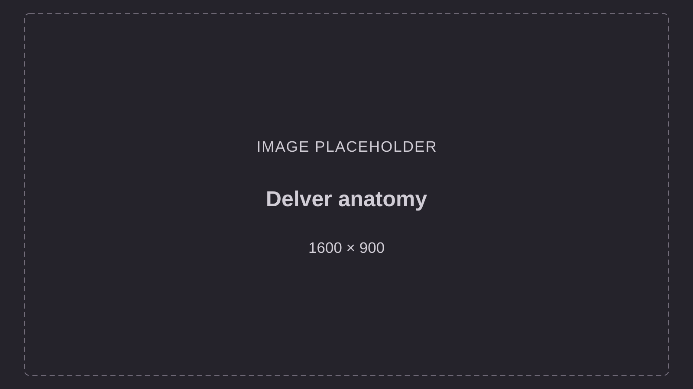

HANDBOOK
The field guide.
Fantasy terms are an identity layer. Each term should map to an ordinary, clearly understood system concept.
Concept blueprintREFERENCE
The language of the Warren.
- Keeper
- Human authority
- Lucerna
- Orchestrator / Lightkeeper
- Delver
- AI worker
- Circle
- Professional discipline
- Rune
- Reusable skill
- Spellbook
- Skill collection
- Relic
- Tool or integration
- Grimoire
- Agent instructions
- Covenant
- Scope and permissions
- Expedition
- Project
- Quest
- Task
- Ritual
- Workflow
- Conclave
- Team collaboration
- Chronicle
- Execution history
- Sanctum
- Workspace
- Revelation
- Validated discovery
- Dead End
- Failed experiment
- Cairn Memory
- Independent memory service
INFORMATION MODEL
Anatomy of a Delver.

- Identity: name, title, Circle and professional role.
- Purpose: responsibility and expected outputs.
- Runes: reusable capabilities.
- Relics: explicitly permitted tools.
- Grimoire: instructions and operating knowledge.
- Covenant: permissions, constraints and approvals.
- Chronicle: observable execution history.